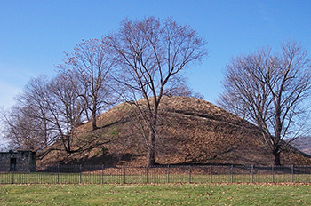

Grave Creek Mound Archaeological Complex
801 Jefferson Avenue, Moundsville WV 26041
304-843-4128 or 1-800-CALLWVA
Tuesday through Saturday, 9 A.M. - 5 P.M.
The Mound
The heart of the site is probably the most famous and certainly the largest of the Adena Burial mounds. A massive undertaking, the total effort required the movement of more than 60,000 tons of earth. Artifacts and exhibits interpreting the lifestyle of the Adena people are displayed in the Delf Norona Museum, adjacent to the 2,000 year old mound. The most impressive and largest Adena mound, Grave Creek Mound is the largest conical type of any of the mound builder structures. Construction of the mound took place in successive stages from about 250-150 B.C., as indicated by the multiple burials at different levels within the structures. In 1838, road engineers measured its height at 69 feet and its diameter at the base at 295 feet. Originally a moat of about 40 feet in width and five feet in depth with one causeway encircled it. The first recorded excavation of the mound took place in 1838, conducted by local amateurs. To gain entrance to the mound, two horizontal tunnels and one vertical shaft were created. This led to the most significant discovery of two burial vaults. In addition to the Adena ornaments and remains found in the interior, the upper vault contained a small flat sandstone tablet. Later, authenticity of the tablet and the meaning of its inscription became quite controversial. Though the stone has never been authenticated and has been disputed by most professionals, a replica of the original is on display in the museum.
The Museum
The grand architecture of the building's interiors has been authentically restored. Visitors can view an interpretive video, "For Liberty and Union," and take a self-guided tour of the structure. Groups may schedule tours featuring dramatic interpretations by authentically-costumed guides. Call for fee and scheduling information. Individual visitors are always welcome and please feel free to take a self-guided tour of the structure and exhibits. Plan a visit to see "West Virginia: Born of the Civil War." The permanent exhibition, located on the first floor of the museum, features dramatic displays with period artifacts, and explores the statehood process against the background of the Civil War.